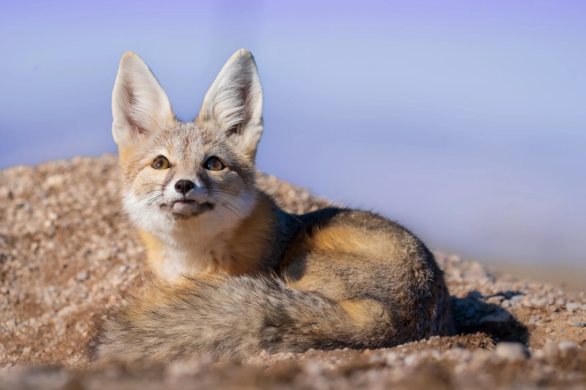
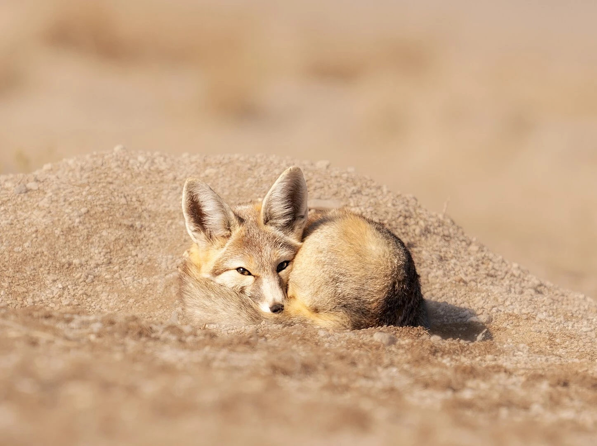

The kit fox has a very small range, only living in the southwestern United States and northwestern Mexico.
Their diet consists of kangaroo rats, pocket mice, cottontail rabbits, quail, ground squirrels, and chukars.
They use their large ears to help aid their hearing and dissipate heat from the North American desert.
They have a short lifespan of only 5-7 years, compared to other fox species with an average of 9-10 years


Photo by unknown from unknown
Photo by unknown from unknown